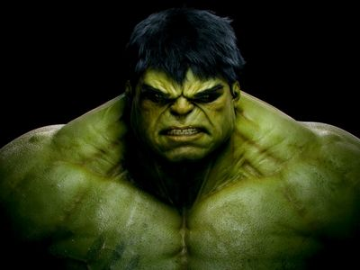

헐크는 감마폭탄을 제작하던 브루스 배너 박사가 감마폭탄 제작 과정의 폭발 사고로 인해 감마선에 노출되어 그 영향으로 분노하면 괴력의 녹색 거인으로 변신하는 능력을 지니게 되어 이 변신한 모습은 '헐크' 라고 불리게 되었다.[6] 어벤져스가 창설되는 계기이자 창립 멤버이기도 하다. 하지만 입장상 얼마 못 가서 탈퇴하고 만다. 모티브는 당연하지만 《지킬 박사와 하이드》의 주인공인 '헨리 지킬'과 그의 또다른 인격인 '에드워드 하이드'이다. 지킬&하이드를 모티브로 한 캐릭터 중에서는 가장 유명한 캐릭터다. 또한 스탠 리가 밝힌 바에 따르면 프랑켄슈타인도 헐크의 모티브라고 한다. hulk 라는 영어 단어 자체는 낡은 큰 배라는 뜻을 가지나 또 주체할 수 없을 정도로 거대한 사람이라는 의미도 있다. 중국어에서는 浩克(하오커)라고 음차하며 綠巨人(녹색 거인)이라고도 불린다. 영화판으로는 후자 쪽으로 불린다.

분노하면 아드레날린의 분비에 의해 녹색 거인으로 변신하여 엄청난 힘과 스피드, 내구성, 에너지, 상처회복력, 체력을 얻는 대신 지적 능력이 크게 떨어진다. 순수하게 전투력만 본다면 우주적 존재를 제외한 MARVEL의 수퍼 히어로들 중 단연 최강이라 할 수 있다. <시크릿 워즈(1985)> 당시 몰큘맨이 떨군 1,500억톤짜리의 바위산을 수퍼 히어로들 중 유일하게 받아낸 자가 헐크다.[8] 또한 평소의 녹색 헐크보다 약한 회색 헐크일때조차 주먹 한 방에 지구의 2배 크기의 운석을 산산조각 낸적도 있다. 외부 자극으로 인해 분노가 끓어올라 의지와 상관없이 변신할 경우에는 이성을 거의 잃어버리지만 자의로 변신할 경우 이성과 지식을 어느 정도 보존하고 있는 것으로 묘사된다. 원작 <플래닛 헐크>에서는 나름 전략가다운 지력을 보이기도 한다. 기본적으로 100톤의 힘을 낼 수 있지만 분노하면 할수록 몸에 자극을 받으면 받을수록 더 강해져 지금까지 정확한 한계치를 모를 정도로 힘, 내구성, 스피드, 에너지, 회복력 등이 기하급수적으로 늘어나게 된다. 게다가 분노가 커지면 그만큼 힘도 커져 심지어 주먹 한 방으로 자신이 현재 있는 우주의 시공간을 2번이나 파괴하는 블랙홀을 능가하는 파괴력을 보여준 때도 있었고, '손뼉치기'에서 나오는 바람과 강한 음파, 에너지 충격으로 불 끄기부터 군대 무력화도 가능하다.[9] 상해와 각종 초능력에 대한 저항능력 - 우주에서도 안 죽는다. 분명 숨을 쉬는데 우주에서 어떻게 안 죽는지는 불명. 또 태양 에너지가 완전히 봉쇄되면 제대로 힘을 못 쓰는 수퍼맨과 달리 심지어 어떤 물질과 에너지도 없는, 공간을 제외하면 완전한 무의 상태인 우주 어느 공간에 있게 되었을때도 멀쩡히 생존했을 정도. 또 총이나 중화기 및 심지어 핵무기와 아다만티움을 7.3초 만에 물어 부술 수 있는 개모양의 로보트에 머리와 목을 물려도 끄떡없이 견뎠고, 또 행성폭발에 휘말리고도 멀쩡했다. 또 지구 400배 질량의 블랙홀의 중력에 자신이 끄떡 없이 견딜 정도의 내구성과 심지어 태양 100만개를 부술 수 있다고 비유할 정도로 강력한 센트리의 전력을 다한 공격들[10]에도 계속 버텨냈고, 결국 센트리를 쓰러뜨렸다.